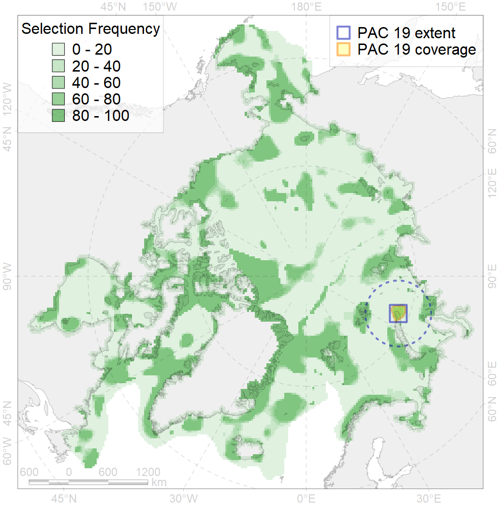
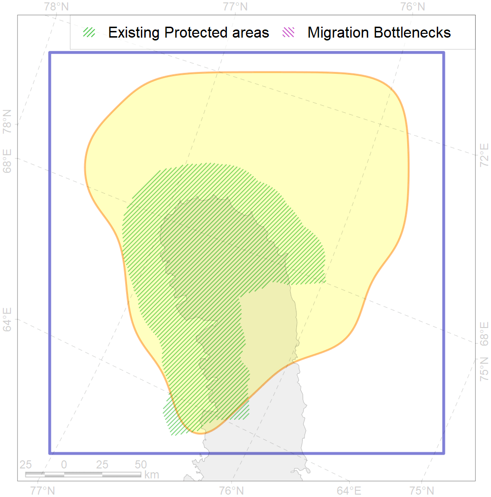

19
For more information regarding this PAC and to conduct custom spatial analysis using the PAC data or any spatial query, please consult Accenter.

0
CFs entirely within the PAC area
2
CFs at least 25% within the PAC area
3
CFs with at least 50% of their target achieved in the PAC
4
CFs with at least half of their target achieved in the PAC
| CF ID | CF Name | Proportion in the PAC | Conservation Target | Contribution to ArcNet Target Achievement | PAC’s Contribution to the Achieved Target |
|---|---|---|---|---|---|
| 3118 | Polynyas distribution in the Northern Novaya Zemlya region | 54.8% | 12.0% | 423.3% | 93.4% |
| 8041 | Novaya Zemlya glacial termini | 31.4% | 30.0% | 104.8% | 94.3% |
| 3027 | Marginal Ice Zone distribution in April in the Kara Sea LME | 23.0% | 12.0% | 167.7% | 42.9% |
| 7236 | Kelp forests of North Island of Novaya Zemlya | 17.6% | 30.0% | 58.7% | 54.4% |
| 1007 | Atlantic Walrus haulouts in Pechora and Kara region | 11.6% | 96.0% | 12.1% | 11.8% |
| 7046 | Western Kara transitional zone | 6.4% | 15.2% | 36.3% | 36.0% |
| 9028 | polar bear denning areas of KS (Kara Sea) subpopulation | 5.2% | 52.8% | 9.4% | 9.3% |
| 6089 | Little Auk (Alle alle polaris) breeding colonies buffer feeding area | 4.4% | 36.0% | 11.4% | 6.7% |
| 2011 | Bearded seal whelping areas in the Kara Sea | 3.9% | 24.0% | 13.7% | 13.4% |
| 1010 | Atlantic Walrus Winter Distribution in Pechora and Kara region | 3.9% | 33.6% | 10.7% | 7.1% |
| 9010 | polar bear of the KS (Kara Sea) subpopulation distribution | 2.7% | 26.4% | 8.7% | 8.5% |
| 3014 | Fast ice distribution in the Novaya Zemlya region | 2.6% | 6.0% | 37.9% | 8.6% |
| 4038 | Feeding area of the Polar cod in the Barents Sea | 2.3% | 24.0% | 8.4% | 6.1% |
| 3117 | Polynyas distribution in the Eastern Novaya Zemlya region | 2.1% | 12.0% | 14.9% | 6.2% |
| 5007 | Beluga of the Barents-Kara-Laptev Sea stock general distribution | 2.1% | 24.0% | 7.6% | 5.1% |
| 5090 | Narwhal in the Russian Arctic assumed summer range | 1.6% | 12.0% | 11.3% | 6.5% |
| 7067 | I.1.1.4. Shelf troughs | 1.4% | 3.0% | 37.4% | 6.0% |
| 7265 | Barents and Kara Sea Throughs | 1.1% | 4.2% | 20.4% | 7.1% |